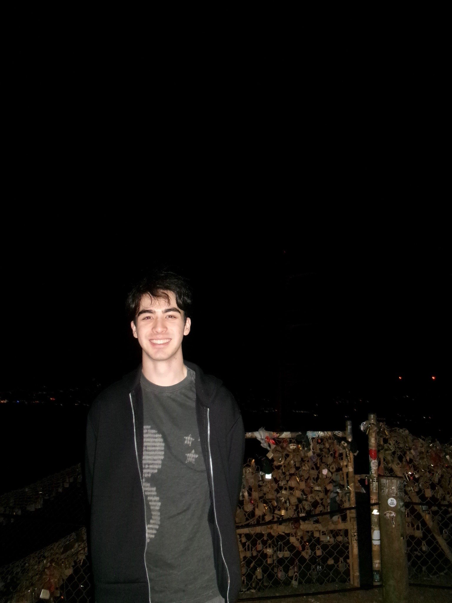

I'm a fourth-year Mechanical Engineering student at UC Berkeley interested in design, structural analysis, and the process of turning ideas into physical products.
I've worked on the factory floor at Boeing, in a magnetics research lab at Enphase Energy, developed apps at HammerSpace and on the structural design team for CalSol's solar race car. Those experiences have exposed me to very different engineering environments, from large-scale manufacturing to research labs to student-led design teams.
The common thread throughout my work is building things that continue to be useful long after I'm gone. Whether it's designing hardware, developing internal tools, or improving engineering workflows, I enjoy creating work that people rely on, iterate on, and improve through real-world feedback rather than leaving behind one-off projects.